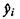
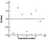
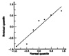
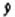
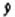
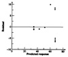
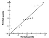

Example 14.6 For the disk I/O and CPU time data of Example 14.1, a scatter plot of the data was shown in Figure 14.2. The plot does appear to satisfy a linear relationship. To check independence of errors, a plot of residuals as a function of the predicted CPU time (columns  and ei in Table 14.1) is shown in Figure 14.11. There does not seem to be any definite trend in the plot. A plot of errors as a function of observation number is shown in Figure 14.12. This graph also does not show any trends.

FIGURE 14.12 Residuals as a function of observation numbers for the disk I/O and CPU data.
){kind=link}
){kind=link}

FIGURE 14.13 Normal quantile-quantile plot for the residuals of disk I/O and CPU time data.
){kind=link}
){kind=link}
To check whether the normality assumption is valid, a normal quantile-quantile plot of the errors is shown in Figure 14.13. The graph is reasonably close to a straight line, leading us to believe that the normality assumption is approximately valid in this case.
To check homoscedasticity, we notice that the errors do seem to have a larger spread toward the lower values of  . It is difficult to make any judgments in this case due to a small number of observations. However, since the magnitude of errors is small relative to predictions, this is not a concern in this case.
. It is difficult to make any judgments in this case due to a small number of observations. However, since the magnitude of errors is small relative to predictions, this is not a concern in this case.
Example 14.7 For the RPC performance study presented earlier in Case Study 14.1, a residual-versus- plot for the ARGUS data is shown in Figure 14.14. The spread on the right side of the graph (at larger values of  seems to be considerably higher than that on the left side. Since the magnitudes of errors are not negligible, this is a cause for concern.
plot for the ARGUS data is shown in Figure 14.14. The spread on the right side of the graph (at larger values of  seems to be considerably higher than that on the left side. Since the magnitudes of errors are not negligible, this is a cause for concern.

FIGURE 14.14 Graph of residual versus predicted response for the ARGUS data.
){kind=link}
){kind=link}

FIGURE 14.15 Normal quantile-quantile plot for the residuals of the ARGUS data.
){kind=link}
){kind=link}
A normal quantile-quantile plot for the same residuals is shown in Figure 14.15. Once again the departure from normality is high, at least in comparison to that in Figure 14.13.